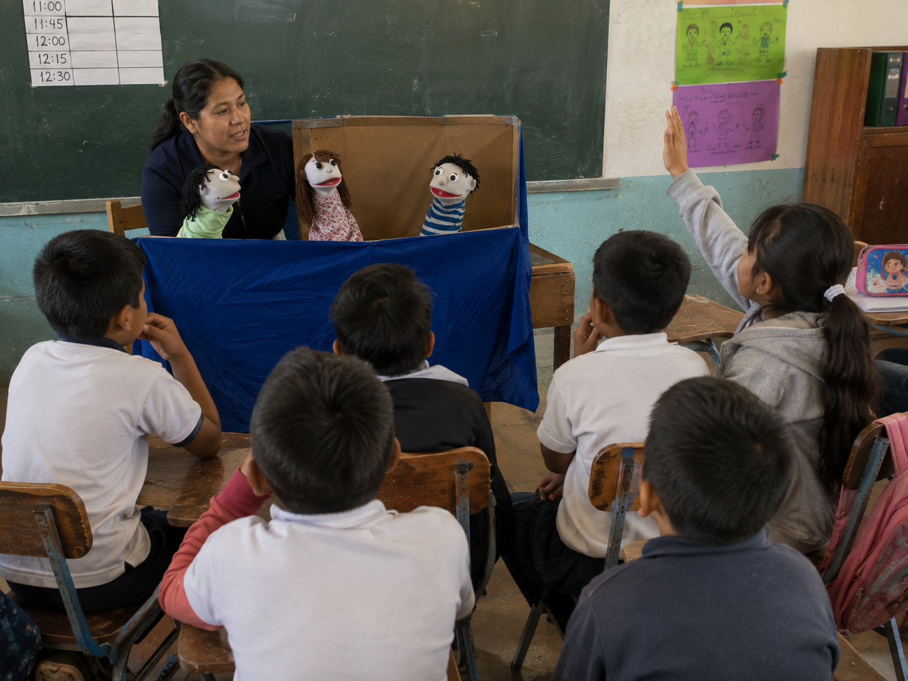

Unidas y unidos frente a la violencia de género
Aprendemos que frente a la violencia podemos buscar apoyo, pedir ayuda y unirnos para encontrar alternativas de protección.
Dramatización con títeres

Vista rápida
Representa la historia con títeres, haz pausas para conversar y ayuda al grupo a proponer formas de buscar apoyo frente a la violencia.